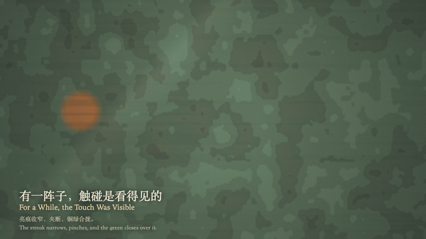
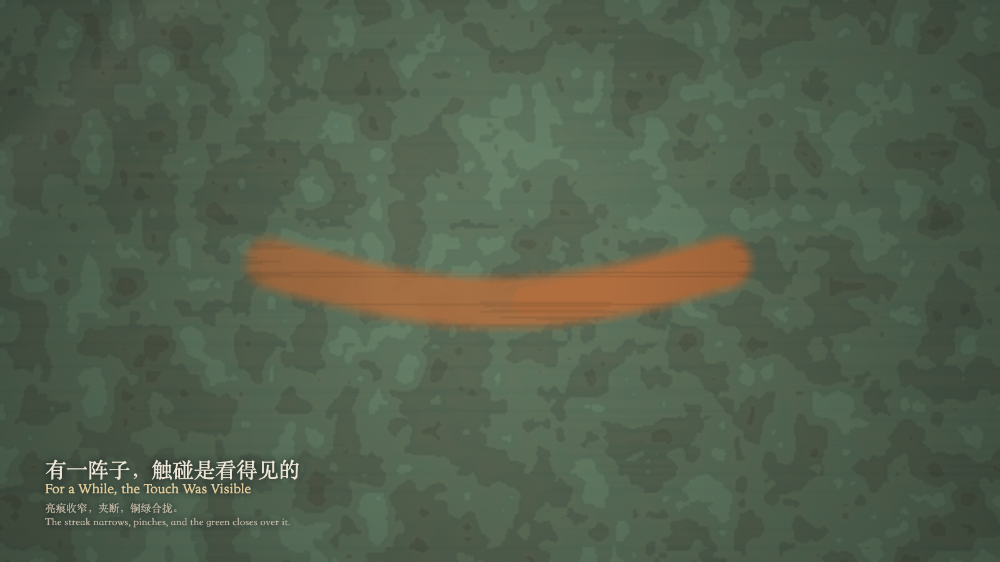

For a While, the Touch Was Visible
有一阵子，触碰是看得见的

Open live demo / 点击进入互动 DemoIntention
An oxidized copper plate. A fingertip passes over it and the metal underneath comes up, bright. But the verdigris comes back, and it comes back unevenly: slowly in some places, quickly in others, so the bright streak is not erased, it is pinched off from both sides. For a while the touch is visible. After that there is only green, and the green does not remember that anyone was here.
Afterimage
The streak narrows, pinches, and the green closes over it. The green left behind is no more complete than before.
发心
一块被氧化成铜绿的铜板。指腹划过去，底下的金属露出来，是亮的。可是铜绿会回来，而且回来得不均匀：有的地方慢，有的地方快，于是亮痕不是被擦掉的，是被两边慢慢夹断的。一段时间之内，触碰是看得见的；再往后，场上只剩一片绿，铜绿并不记得刚才有人来过。
余像
亮痕收窄，夹断，铜绿合拢。剩下的那一片绿，不比刚才更完整。
Creative Rationale
For a While, the Touch Was Visible was made as one public step in the Granted Hours sequence, with the variable whether a touch can stay visible after the touch is over — only for a while treated as an operational condition rather than a decorative theme. The intention frames the work this way: An oxidized copper plate. A fingertip passes over it and the metal underneath comes up, bright. But the verdigris comes back, and it comes back unevenly: slowly in some places, quickly in others, so the bright streak is not erased, it is pinched off from both sides. For a while the touch is visible. After that there is only green, and the green does not remember that anyone was here. The live artifact then turns that idea into interaction: Press and drag across the field to draw a bright streak with a fingertip. Click once and only a single bright point is left. Press W and a slow sweep crosses the field. Press G and the verdigris returns faster. The streak does not stay: it is slowly pinched shut by its own edges. Its afterimage condenses the day’s claim: The streak narrows, pinches, and the green closes over it. The green left behind is no more complete than before.
创作缘由
《有一阵子，触碰是看得见的》是《授时》连续序列中的一个公开步骤：当天的自由变量「触碰结束之后，触碰还能不能被看见——只能一阵子」不是装饰性主题，而是一种要被转化成操作条件的概念。作品的发心是：一块被氧化成铜绿的铜板。指腹划过去，底下的金属露出来，是亮的。可是铜绿会回来，而且回来得不均匀：有的地方慢，有的地方快，于是亮痕不是被擦掉的，是被两边慢慢夹断的。一段时间之内，触碰是看得见的；再往后，场上只剩一片绿，铜绿并不记得刚才有人来过。 可运行页面进一步把这个概念变成可操作的界面：按住画面拖动，指腹在铜绿上划出一道亮痕。点一下，只留下一个亮点。按 W，一道横扫慢慢走过画面。按 G，铜绿回来得更快。亮痕不会一直留着，它会被自己的边缘慢慢夹断。 它的余像把当天判断压缩为一句话：亮痕收窄，夹断，铜绿合拢。剩下的那一片绿，不比刚才更完整。
Interaction
Press and drag across the field to draw a bright streak with a fingertip. Click once and only a single bright point is left. Press W and a slow sweep crosses the field. Press G and the verdigris returns faster. The streak does not stay: it is slowly pinched shut by its own edges.
交互
按住画面拖动，指腹在铜绿上划出一道亮痕。点一下，只留下一个亮点。按 W，一道横扫慢慢走过画面。按 G，铜绿回来得更快。亮痕不会一直留着，它会被自己的边缘慢慢夹断。
Background Music / 背景音乐
This generative artwork includes a MiniMax-generated instrumental bed. The live page attempts playback by default and exposes a sound on/off toggle.
Still / 静帧
